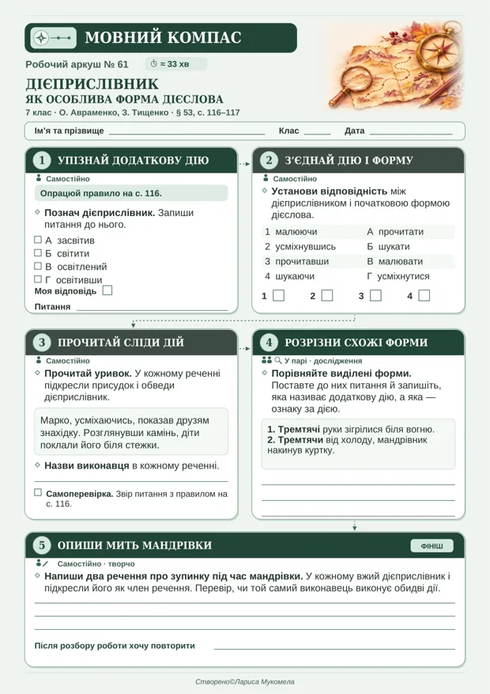
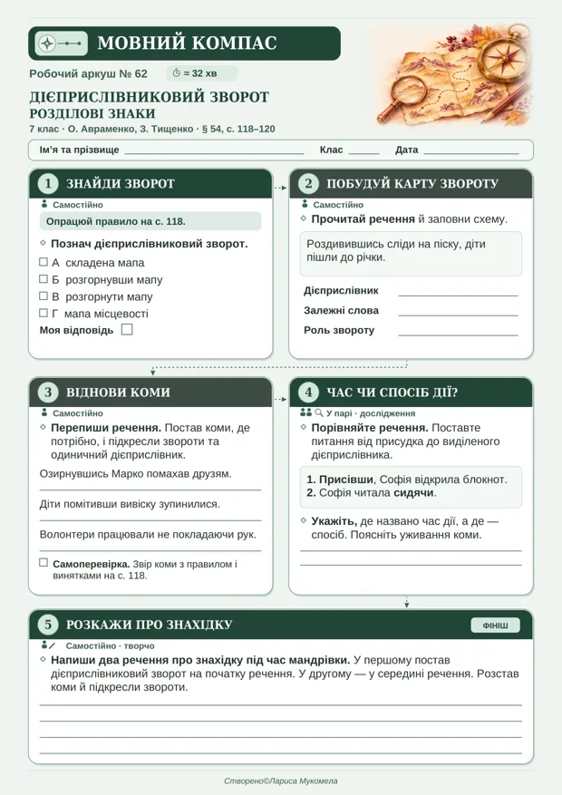
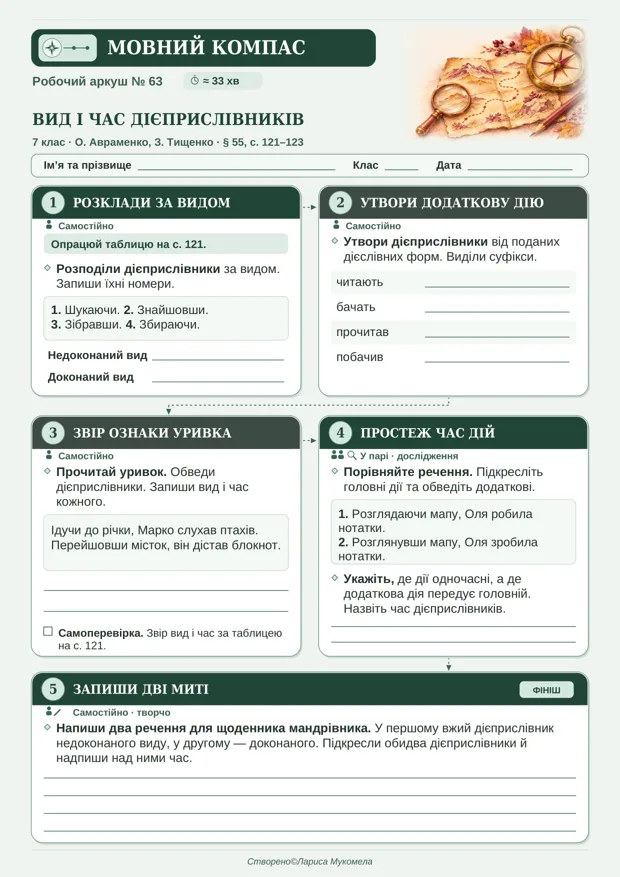
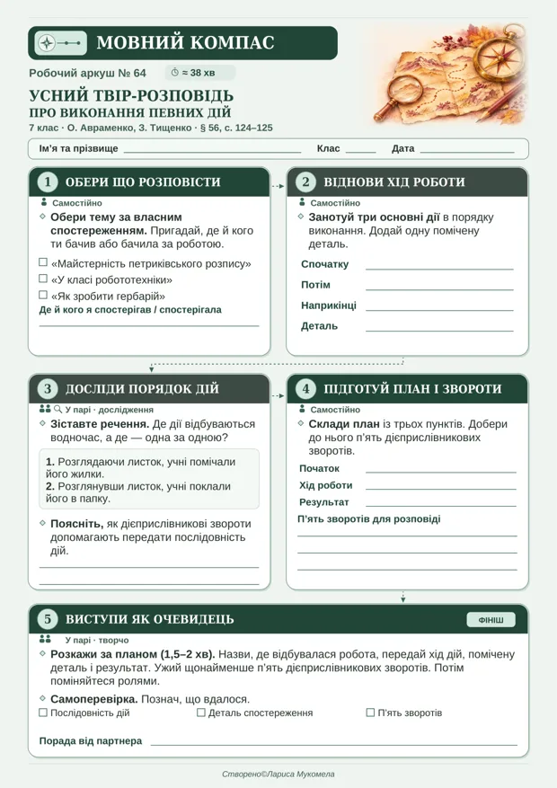
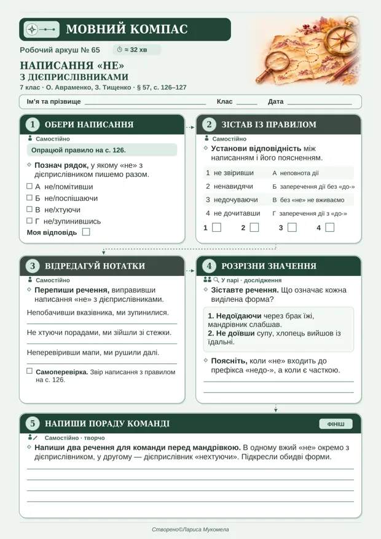
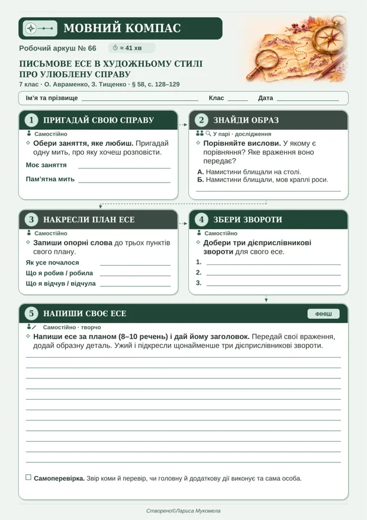
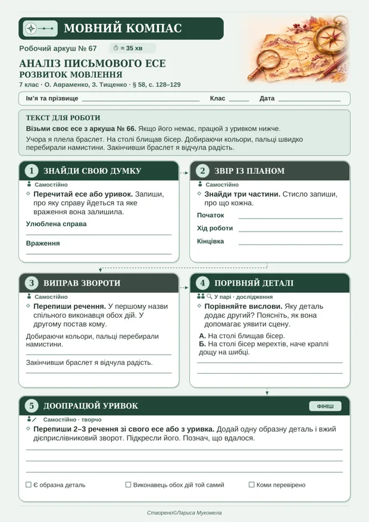
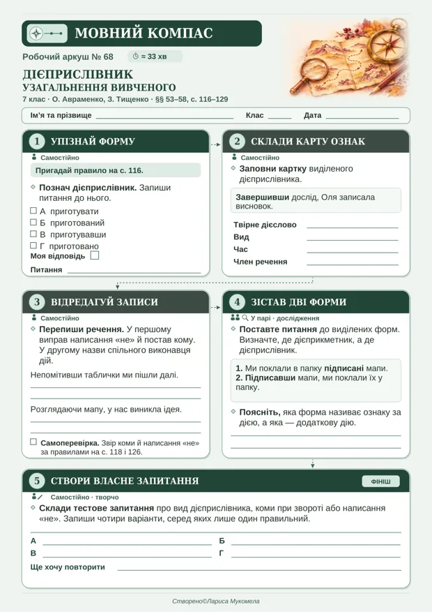
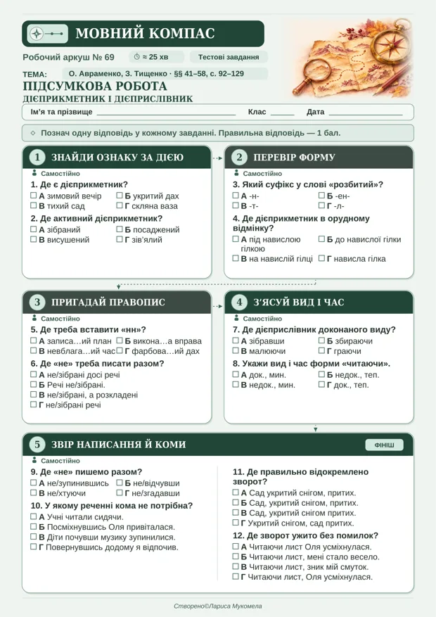

Мовний компас · № 61–69
Дієприслівник
Учнівських аркушів: 9 · Матеріалів для вчителя: 3. Оригінальні PNG для друку.
Архів міститиме аркуші для учнів і наявні матеріали для вчителя. Дочекайтеся завершення підготовки.






Аркуш № 64 · 7 клас
Усний твір-розповідь про виконання певних дій

Матеріал для вчителя




Аркуш № 66 · 7 клас
Письмове есе в художньому стилі про улюблену справу

Матеріал для вчителя






Аркуш № 69 · 7 клас
Підсумкова робота. Дієприкметник і дієприслівник

Матеріал для вчителя